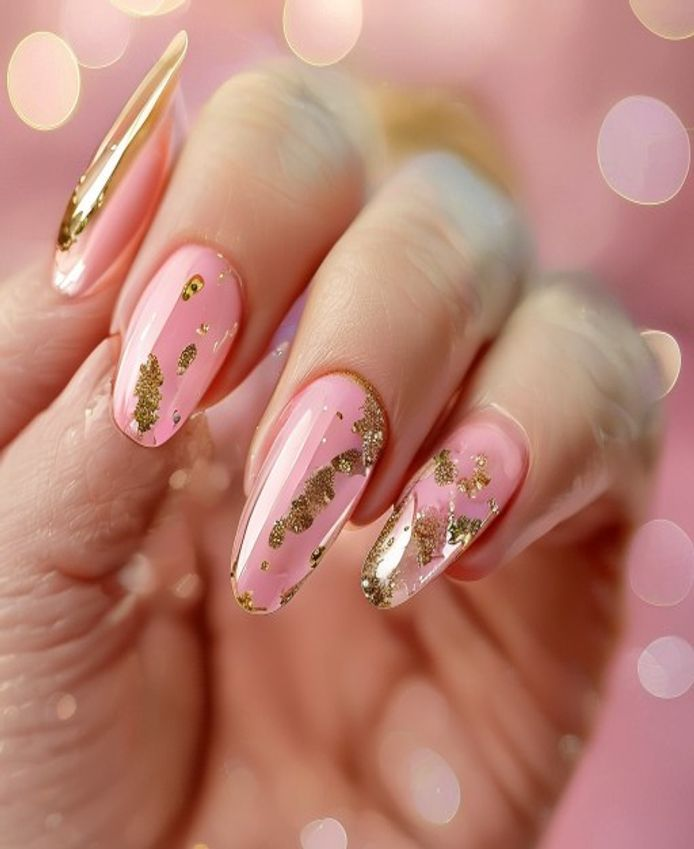
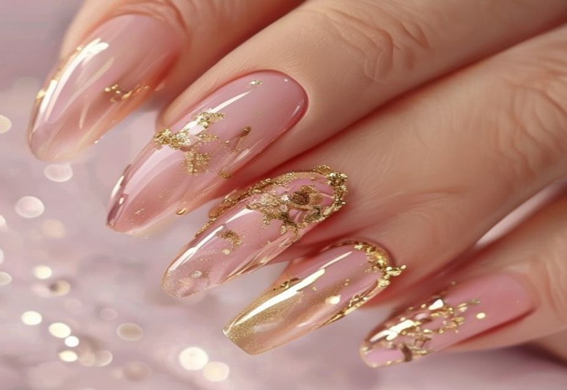
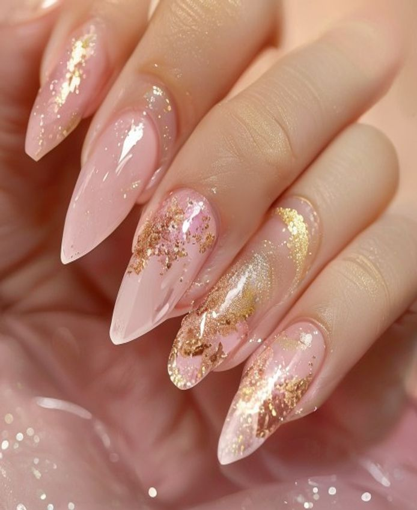
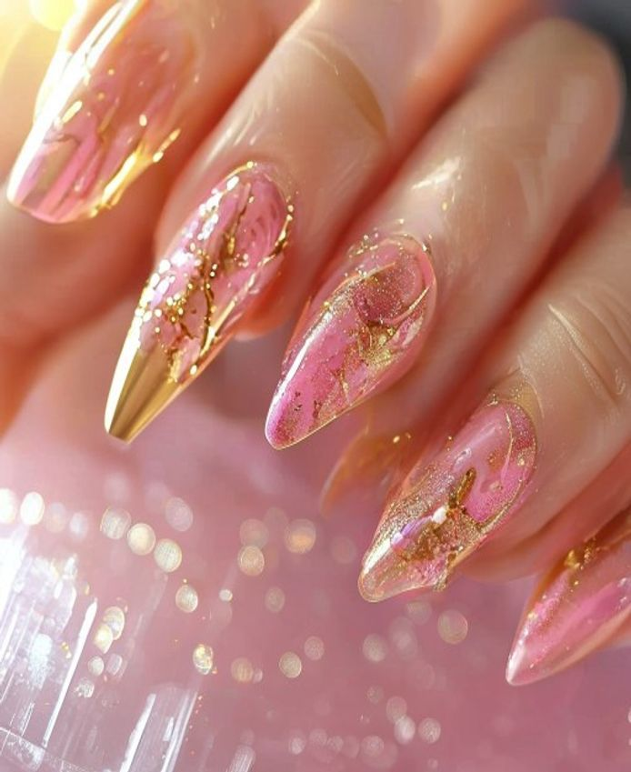
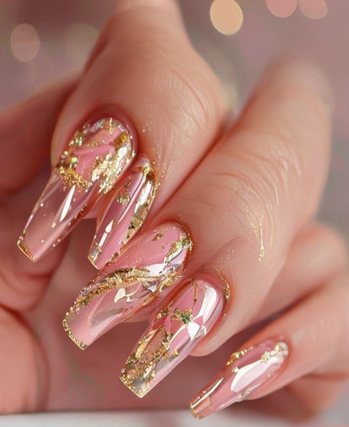
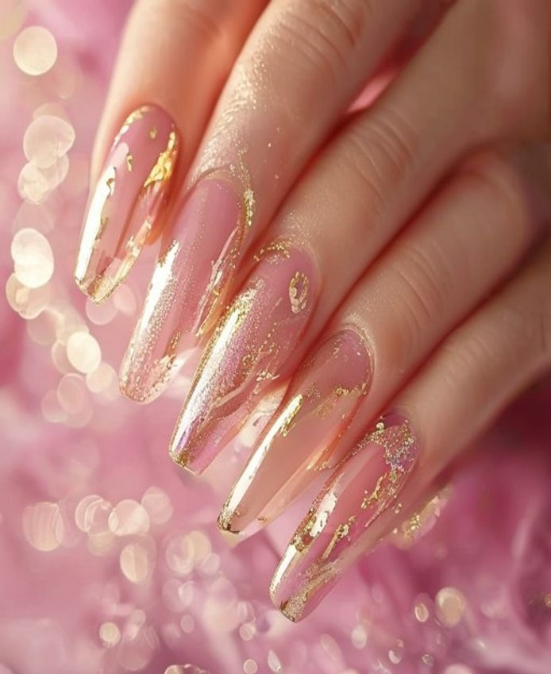
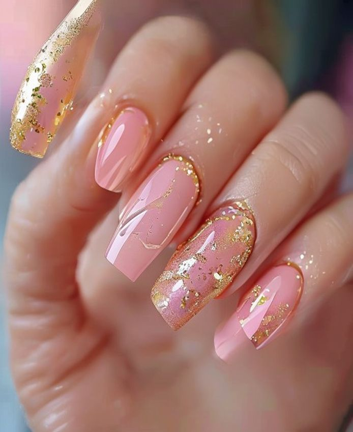

Referencia
Set nude prolijo
Acabado limpio para todos los dias, ideal si queres verte arreglada sin sobrecargar.
Vale Nails Pocitos | Lunes a sabado de 10 a 20 hs | Instagram @valenails_mvd
Si queres un set prolijo, femenino y bien terminado, elegi una referencia de la galeria y escribime para coordinar tu turno en Pocitos, Montevideo.

Galeria

Acabado limpio para todos los dias, ideal si queres verte arreglada sin sobrecargar.

Opcion clasica para oficina, evento o si te gusta un look elegante y parejo.

Forma y terminacion protagonistas para destacar manos prolijas en foto y en persona.

Detalles finos sin recargar, pensado para quienes quieren algo femenino y liviano.

Inspiracion para fechas especiales, cenas, cumpleanos o una salida donde queres ir impecable.

Brillo y textura como disparador visual para elegir un estilo que te represente.
Servicios
Desde
$800
Opciones nude, francesa, glossy o con detalle segun el estilo que quieras llevar. Si me mandas una referencia, te digo rapido si encaja con este servicio.
Desde
$600
Ideal si queres una manicura prolija, duradera y mas liviana. Tambien podemos ver retoque o seguimiento segun el estado de tus uñas.
Podes venir con referencia propia o pedirme una propuesta segun largo, forma, ocasion y tiempo disponible. Atiendo en Pocitos y respondo por WhatsApp.
Horario real: lunes a sabado de 10 a 20 hs.
Antes de reservar
Reserva
Revisa estilos, largos y acabados para ubicar rapido lo que te gustaria hacerte.
Compartime una foto de referencia o contame el estilo que tenes en mente.
Seguimos por mensaje con disponibilidad, detalles y el siguiente paso para reservar.
Testimonios
No invento testimonios. La idea de esta landing es que primero veas trabajos, precios y contacto real para decidir con criterio.
Si ya sabes que estilo queres, me mandas la foto por WhatsApp y seguimos con disponibilidad, tiempo estimado y siguiente paso para reservar.
FAQ
Si. Podes compartir una idea, un color o un acabado para orientar mejor el turno.
Si. La idea es adaptar largo, forma y detalle a lo que te haga sentir comoda.
Escribime por el canal principal y seguimos con fecha, estilo y siguiente paso para confirmar.
Si. Podes preguntar con tiempo, mandar una referencia y ver opciones antes de decidir.
Agenda
Mandame el estilo que te gusto, la fecha que te sirve y cualquier detalle util para responderte con disponibilidad. Si preferis, tambien podes escribirme por Instagram en @valenails_mvd.